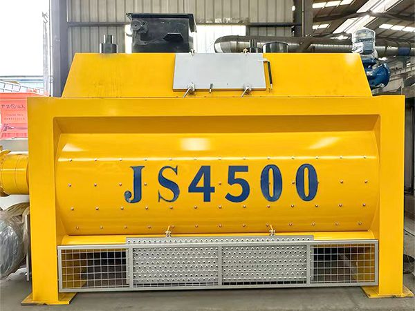

Принудительный смеситель JS4500 — для мега-заводов и крупнейших проектов

js4500 twin-shaft forced concrete mixer
Двухвальный принудительный бетоносмеситель JS4500 — крупнейшая модель YUDA с выгрузкой 4500L за цикл. Для двойных заводов HZS240 и крупнейших инфраструктурных проектов.
| Модель | JS4500 |
| Производитель | YudaHualong (YudaHualong Concrete) |
| Тип | Twin-Shaft Forced Mixer |
| Загрузка | 7200L |
| Выгрузка | 4500L |
| Мощность | 90KW x 2 |
| Цикл | 60сек |
Двухвальный принудительный принцип смешивания обеспечивает быстрое и равномерное перемешивание бетона. Высокоэффективный двигатель повышает производительность.
Смесительный барабан и лопасти из высокопрочных износостойких материалов продлевают срок службы и снижают затраты на обслуживание.
Современные электронные и сенсорные технологии обеспечивают интеллектуальный контроль и точный мониторинг оборудования.
Низкий уровень шума и энергопотребления снижают воздействие на окружающую среду.